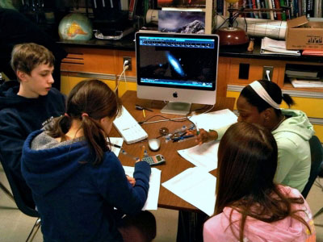

In the first year, five Ambassadors worked with Ms. Bartley and her 83 students over six weeks to create tours on astronomy topics ranging from colliding galaxies to black holes. In the following years, over a dozen Ambassadors have helped ALL sixth grade students at this school to deepen their understanding of Astronomy through WWT. To date, students at this school have created more than 300 tours!